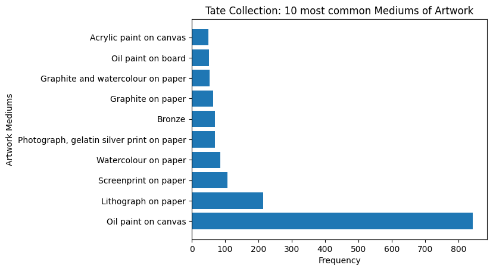

%matplotlib inline
import matplotlib.pyplot as plt
import numpy as np
import pandas as pd
from nltk.probability import FreqDistDH140 Final Project: Tate Collections Blog Post
by Samantha Alexis Manuel // 03.14.2023.
Link to Data Source: Tate CSV File From the CORGIS Dataset Project
Introduction
Overview
For my DH140 Final Project, I am analyzing + contextualizing Tate’s collection of artworks. This blog post is organized in 4 main parts: Introduction, Methods, Results, and Discussion. I’m mainly asking questions about DEAI (Diversity, Equity, Accessibility, and Inclusion) in museums (specifically their collections), as they are critical in reflecting our collective cultural heritage and shared cultural heirlooms.
Overall, the value that this project brings is a chance to examine 1 museum with scrutiny and see whether or not there has been any progress in these areas. In my data visualizations, findings, and analysis, I am looking at the Tate Collection’s Gender Diversity, Collection Diversity, Artist Birth Locations, and Acquisition History.
DEAI in all aspects of a museum (or any cultural institution) are vital to their own future relevance, sustainability, and this project seeks to explore these themes.
Research Topic + Questions
Museum Collections and DEAI (Diversity, Equity, Accessibility, and Inclusion)
Gender Diversity. Are there any trends in acquisition, specifically in the accessions of women vs men?
Collection Diversity. Are there any trends or preferences that exist with the types of objects chosen to be a part of the collection?
Artist Birth Locations. Are there any trends in the collection regarding the artist’s location of birth?
Acquisition History. During which time periods were there more/less of a trend in acquiring artwork?
Explanation of Data + Analytical Process
Explanation of Data
Tate is an arts/cultural institution that holds the UK’s national collection of British, international modern, and contemporary art. This particular dataset includes metadata about the collection of artworks the Tate holds.
The data from the Tate CSV File, from the CORGIS Dataset Project, contains information about the artist (gender, name, role, birth year, birth location, year of death), artwork information (medium, thumbnail, title, url, dimensions), and metadata (acquisition dates, date of creation, credit).
Analytical Process
Code for data analysis: Python, Matplotlib, nltk.probability
Analysis Procedures:
Import Matplotlib, Numpy, Pandas, from nltk.probability import FreqDist
Import Tate Collections CSV as pandas dataframe
Clean the data frame of any Na or Nan
Run several exploratory data analysis to guide further visualizations
Create cleaned, separated datasets for each of the variables
Generate data visualizations to answer my research questions
Contextualize and present my findings from the data in the Discussion section of the Project
Results
tatedf = pd.read_csv('https://corgis-edu.github.io/corgis/datasets/csv/tate/tate.csv')tatedf| artist.gender | artist.name | artist.role | data.medium | data.thumbnail | data.title | data.url | dimensions.depth | dimensions.height | dimensions.width | metadata.acquisition date | metadata.creation decade | metadata.creation year | metadata.credit | artist.birth.location | artist.birth.year | artist.death.location | artist.death.year | |
|---|---|---|---|---|---|---|---|---|---|---|---|---|---|---|---|---|---|---|
| 0 | Female | Abakanowicz, Magdalena | artist | Burlap and resin | http://www.tate.org.uk/art/images/work/T/T12/T... | Backs | http://www.tate.org.uk/art/artworks/abakanowic... | 0.0 | 0.0 | 0.0 | 2009 | 1970 | 1976 | Presented anonymously 2009 | Polska | 1930 | NaN | 0 |
| 1 | Male | Abbey, Edwin Austin | artist | Ink on paper | http://www.tate.org.uk/art/images/work/N/N03/N... | Illustration to Judith Shakespeare | http://www.tate.org.uk/art/artworks/abbey-illu... | 0.0 | 419.0 | 305.0 | 1924 | 1880 | 1883 | Presented by a group of admirers through John ... | Philadelphia, United States | 1852 | London, United Kingdom | 1911 |
| 2 | Female | Abbott, Berenice | artist | Photograph, gelatin silver print on paper | NaN | Tri-Boro Barber Shop | http://www.tate.org.uk/art/artworks/abbott-tri... | 0.0 | 200.0 | 250.0 | 2010 | 1930 | 1935 | Accepted by HM Government in lieu of inheritan... | Springfield, United States | 1898 | Monson, United States | 1991 |
| 3 | Male | Abbott, Lemuel Francis | artist | Oil paint on canvas | http://www.tate.org.uk/art/images/work/T/T01/T... | Portrait of the Engraver Francesco Bartolozzi | http://www.tate.org.uk/art/artworks/abbott-por... | 0.0 | 676.0 | 756.0 | 1968 | 0 | 0 | Presented by Mrs M. Bernard 1968 | Leicestershire, United Kingdom | 1760 | London, United Kingdom | 1803 |
| 4 | Male | Abrahams, Ivor | artist | Fibreglass and polystyrene | http://www.tate.org.uk/art/images/work/T/T03/T... | Lady in Niche | http://www.tate.org.uk/art/artworks/abrahams-l... | 762.0 | 1575.0 | 2095.0 | 1982 | 1970 | 1973 | Purchased 1982 | Wigan, United Kingdom | 1935 | NaN | 0 |
| ... | ... | ... | ... | ... | ... | ... | ... | ... | ... | ... | ... | ... | ... | ... | ... | ... | ... | ... |
| 3327 | Male | Zuloaga, Ignacio | artist | Oil paint on canvas | http://www.tate.org.uk/art/images/work/N/N01/N... | View of the Escorial | http://www.tate.org.uk/art/artworks/zuloaga-vi... | 0.0 | 406.0 | 292.0 | 1923 | 1900 | 1905 | Presented by T.W. Bacon through the Art Fund 1923 | Espaa | 1870 | Espaa | 1945 |
| 3328 | Male | Zyw, Aleksander | artist | Oil paint on canvas | http://www.tate.org.uk/art/images/work/T/T00/T... | Light | http://www.tate.org.uk/art/artworks/zyw-light-... | 28.0 | 662.0 | 934.0 | 1962 | 1950 | 1957 | Presented by Lady Alice Egerton through the Fr... | Polska | 1905 | NaN | 1995 |
| 3329 | Male | di Suvero, Mark | artist | Lithograph on paper | NaN | Tetra | http://www.tate.org.uk/art/artworks/di-suvero-... | 0.0 | 843.0 | 1152.0 | 2004 | 1970 | 1976 | Presented by Tyler Graphics Ltd in honour of P... | Shanghai, Zhonghua | 1933 | NaN | 0 |
| 3330 | Male | van Elk, Ger | artist | Photograph, colour, on paper with acrylic pain... | NaN | Lunch II | http://www.tate.org.uk/art/artworks/van-elk-lu... | 0.0 | 1000.0 | 800.0 | 1980 | 1970 | 1976 | Purchased 1980 | Amsterdam, Nederland | 1941 | NaN | 0 |
| 3331 | Male | tyrsk, Jindrich | artist | Photograph, black and white, on paper | http://www.tate.org.uk/art/images/work/P/P79/P... | Untitled | http://www.tate.org.uk/art/artworks/styrsky-un... | 0.0 | 0.0 | 0.0 | 2007 | 1930 | 1934 | Purchased 2007 | NaN | 1899 | Praha, Cesk Republika | 1942 |
3332 rows × 18 columns
# dataframe without na or nan values
tatedf2 = tatedf.dropna()
print(tatedf2) artist.gender artist.name artist.role \
1 Male Abbey, Edwin Austin artist
3 Male Abbott, Lemuel Francis artist
10 Male Adam, Robert artist
15 Male Adler, Jankel artist
16 Female Adshead, Mary artist
... ... ... ...
3310 Male Young-Hunter, John artist
3311 Male Yuon, Konstantin artist
3323 Male Zoffany, Johan artist
3326 Male Zuccarelli, Francesco artist
3327 Male Zuloaga, Ignacio artist
data.medium \
1 Ink on paper
3 Oil paint on canvas
10 Watercolour, graphite, gouache and ink on paper
15 Oil paint on canvas
16 Oil paint on canvas
... ...
3310 Oil paint on canvas
3311 Oil paint on wood
3323 Oil paint on canvas
3326 Oil paint on canvas
3327 Oil paint on canvas
data.thumbnail \
1 http://www.tate.org.uk/art/images/work/N/N03/N...
3 http://www.tate.org.uk/art/images/work/T/T01/T...
10 http://www.tate.org.uk/art/images/work/T/T09/T...
15 http://www.tate.org.uk/art/images/work/T/T00/T...
16 http://www.tate.org.uk/art/images/work/T/T07/T...
... ...
3310 http://www.tate.org.uk/art/images/work/N/N01/N...
3311 http://www.tate.org.uk/art/images/work/T/T00/T...
3323 http://www.tate.org.uk/art/images/work/T/T12/T...
3326 http://www.tate.org.uk/art/images/work/T/T04/T...
3327 http://www.tate.org.uk/art/images/work/N/N01/N...
data.title \
1 Illustration to Judith Shakespeare
3 Portrait of the Engraver Francesco Bartolozzi
10 Composition: River in a Gorge
15 The Mutilated
16 The Cruise
... ...
3310 My Ladys Garden
3311 The Monastery at Zagorsk
3323 Colonel Blair with his Family and an Indian Ayah
3326 A Landscape with the Story of Cadmus Killing t...
3327 View of the Escorial
data.url dimensions.depth \
1 http://www.tate.org.uk/art/artworks/abbey-illu... 0.0
3 http://www.tate.org.uk/art/artworks/abbott-por... 0.0
10 http://www.tate.org.uk/art/artworks/adam-compo... 0.0
15 http://www.tate.org.uk/art/artworks/adler-the-... 0.0
16 http://www.tate.org.uk/art/artworks/adshead-th... 0.0
... ... ...
3310 http://www.tate.org.uk/art/artworks/young-hunt... 0.0
3311 http://www.tate.org.uk/art/artworks/yuon-the-m... 0.0
3323 http://www.tate.org.uk/art/artworks/zoffany-co... 0.0
3326 http://www.tate.org.uk/art/artworks/zuccarelli... 0.0
3327 http://www.tate.org.uk/art/artworks/zuloaga-vi... 0.0
dimensions.height dimensions.width metadata.acquisition date \
1 419.0 305.0 1924
3 676.0 756.0 1968
10 373.0 302.0 1997
15 1118.0 864.0 1960
16 1822.0 1420.0 1997
... ... ... ...
3310 1822.0 1067.0 1899
3311 403.0 327.0 1964
3323 1346.0 965.0 2008
3326 1572.0 1264.0 1985
3327 406.0 292.0 1923
metadata.creation decade metadata.creation year \
1 1880 1883
3 0 0
10 0 0
15 1940 1942
16 1930 1934
... ... ...
3310 1890 1899
3311 1910 1911
3323 1780 1786
3326 1760 1765
3327 1900 1905
metadata.credit \
1 Presented by a group of admirers through John ...
3 Presented by Mrs M. Bernard 1968
10 Purchased as part of the Opp Collection with a...
15 Presented by Robert Strauss 1960
16 Purchased 1997
... ...
3310 Presented by the Trustees of the Chantrey Bequ...
3311 Bequeathed by Peter Provatoroff 1964
3323 Bequeathed by Simon Sainsbury 2006, accessione...
3326 Purchased 1985
3327 Presented by T.W. Bacon through the Art Fund 1923
artist.birth.location artist.birth.year \
1 Philadelphia, United States 1852
3 Leicestershire, United Kingdom 1760
10 Kirkcaldy, United Kingdom 1728
15 Tuszyn, Polska 1895
16 London, United Kingdom 1904
... ... ...
3310 Glasgow, United Kingdom 1874
3311 Moskva, Rossiya 1875
3323 Frankfurt am Main, Deutschland 1733
3326 Italia 1702
3327 Espaa 1870
artist.death.location artist.death.year
1 London, United Kingdom 1911
3 London, United Kingdom 1803
10 London, United Kingdom 1792
15 Aldbourne, United Kingdom 1949
16 Hampstead, United Kingdom 1995
... ... ...
3310 Taos, United States 1955
3311 Moskva, Rossiya 1958
3323 London, United Kingdom 1810
3326 Firenze 1788
3327 Espaa 1945
[1076 rows x 18 columns]tatedf.describe()| dimensions.depth | dimensions.height | dimensions.width | metadata.acquisition date | metadata.creation decade | metadata.creation year | artist.birth.year | artist.death.year | |
|---|---|---|---|---|---|---|---|---|
| count | 3332.000000 | 3332.000000 | 3332.000000 | 3332.000000 | 3332.000000 | 3332.000000 | 3332.000000 | 3332.000000 |
| mean | 79.340186 | 785.431363 | 718.760534 | 1978.930672 | 1729.429772 | 1733.471789 | 1864.450180 | 1242.624550 |
| std | 400.998912 | 958.836269 | 728.612090 | 32.768160 | 598.943711 | 600.335845 | 213.973474 | 921.207257 |
| min | 0.000000 | 0.000000 | 0.000000 | 1842.000000 | 0.000000 | 0.000000 | 0.000000 | 0.000000 |
| 25% | 0.000000 | 248.000000 | 240.000000 | 1967.000000 | 1880.000000 | 1888.750000 | 1849.000000 | 0.000000 |
| 50% | 0.000000 | 514.000000 | 527.000000 | 1988.000000 | 1950.000000 | 1955.000000 | 1907.000000 | 1868.000000 |
| 75% | 0.000000 | 991.250000 | 921.000000 | 2003.000000 | 1970.000000 | 1979.000000 | 1939.000000 | 1964.000000 |
| max | 8965.000000 | 16000.000000 | 10900.000000 | 2013.000000 | 2010.000000 | 2012.000000 | 2004.000000 | 2014.000000 |
# dataframe without na or nan values
tatedf2.describe()| dimensions.depth | dimensions.height | dimensions.width | metadata.acquisition date | metadata.creation decade | metadata.creation year | artist.birth.year | artist.death.year | |
|---|---|---|---|---|---|---|---|---|
| count | 1076.000000 | 1076.000000 | 1076.000000 | 1076.000000 | 1076.00000 | 1076.000000 | 1076.000000 | 1076.000000 |
| mean | 35.061338 | 698.686803 | 672.132900 | 1966.884758 | 1548.48513 | 1552.130112 | 1839.356877 | 1902.351301 |
| std | 167.716338 | 679.944053 | 596.580919 | 36.976419 | 731.78217 | 733.495980 | 71.411855 | 124.997649 |
| min | 0.000000 | 0.000000 | 0.000000 | 1842.000000 | 0.00000 | 0.000000 | 1560.000000 | 0.000000 |
| 25% | 0.000000 | 267.000000 | 251.750000 | 1939.000000 | 1777.50000 | 1779.750000 | 1793.750000 | 1862.000000 |
| 50% | 0.000000 | 519.000000 | 546.000000 | 1980.000000 | 1890.00000 | 1898.000000 | 1859.000000 | 1925.000000 |
| 75% | 0.000000 | 914.000000 | 905.000000 | 1997.000000 | 1930.00000 | 1936.000000 | 1890.000000 | 1962.000000 |
| max | 2600.000000 | 10236.000000 | 8915.000000 | 2013.000000 | 2000.00000 | 2005.000000 | 1966.000000 | 2012.000000 |
Findings + Visuals
For this specific section, I made cleaned, separated datasets for each of the variables I was seeking to analyze. Here’s what I found:
#Visual on Artist Gender Diversity
genderdf = tatedf.dropna(subset=['artist.gender'])
gender = genderdf["artist.gender"]
genderfreq = FreqDist(gender)
genderfreqFreqDist({'Male': 2791, 'Female': 492})y = np.array([2791, 492])
mylabels = ["Male", "Female"]
plt.title('Tate Collection: Artist Gender Diveristy')
plt.pie(y, labels = mylabels)
plt.show() 
Artist Gender Diversity: Findings
If this graphic wasn’t enough to show it, there is a shocking lack of female artists in museums. Out of a collection of 3,283 artists, only 14% are female artists. That leaves us with 86% of the artists represented being male.
#Visual of Diversity of Artworks
mediumdf = tatedf.dropna(subset=['data.medium'])
medium = mediumdf["data.medium"]
mediumfreq = FreqDist(medium)
mediumfreq.most_common(10)[('Oil paint on canvas', 844),
('Lithograph on paper', 215),
('Screenprint on paper', 107),
('Watercolour on paper', 85),
('Photograph, gelatin silver print on paper', 70),
('Bronze', 70),
('Graphite on paper', 65),
('Graphite and watercolour on paper', 54),
('Oil paint on board', 51),
('Acrylic paint on canvas', 50)]mediumtype = ['Oil paint on canvas', 'Lithograph on paper','Screenprint on paper','Watercolour on paper','Photograph, gelatin silver print on paper','Bronze','Graphite on paper','Graphite and watercolour on paper', 'Oil paint on board', 'Acrylic paint on canvas' ]
mediumquantity = [844, 215, 107, 85, 70, 70, 65, 54, 51, 50]
plt.barh(mediumtype, mediumquantity)
plt.title('Tate Collection: 10 most common Mediums of Artwork')
plt.ylabel('Artwork Mediums')
plt.xlabel('Frequency')
plt.show<function matplotlib.pyplot.show(close=None, block=None)>
Collection Diversity: Findings
Other than looking about information about the artists themselves, I contend that it is important to see the diversity of the actual artworks themselves. Commonly, art galleries or spaces will be dedicated to a particular medium. As for the Tate’s collection and their focus on modern art, it appears that most of their works are oil paint on canvas (having 844 works).
#Visuals on Artist Diveristy (based on birth location)
birthlocdf = tatedf.dropna(subset=['artist.birth.location'])
birthloc = birthlocdf["artist.birth.location"]
birthlocfreq = FreqDist(birthloc)
birthlocfreq.most_common(10)[('London, United Kingdom', 442),
('Paris, France', 54),
('Edinburgh, United Kingdom', 47),
('New York, United States', 38),
('Glasgow, United Kingdom', 35),
('Dublin, ire', 28),
('England, United Kingdom', 28),
('Liverpool, United Kingdom', 23),
('Birmingham, United Kingdom', 22),
('Bristol, United Kingdom', 20)]birthloctype = ['London, United Kingdom','Paris, France','Edinburgh, United Kingdom','New York, United States','Glasgow, United Kingdom','Dublin, Ireland', 'England, United Kingdom', 'Liverpool, United Kingdom', 'Birmingham, United Kingdom', 'Bristol, United Kingdom']
birthlocquantity = [442, 54, 47, 38, 35, 28, 28, 23, 22, 20]
plt.barh(birthloctype, birthlocquantity)
plt.title('Tate Collection: 10 most common Birth Locations of Artist')
plt.ylabel('Birth Locations')
plt.xlabel('Frequency')
plt.show<function matplotlib.pyplot.show(close=None, block=None)>Artist Diversity (based on birth location): Findings
This may be of no surprise as most of the artists are coming from the United Kingdom, with most of them being born in London. Following that, there is France, the United States, and then Ireland.
#Histogram of Acquistion History
acquisitiondf = tatedf.dropna(subset=['data.medium'])
plt.hist(acquisitiondf["metadata.acquisition date"])
plt.title('Tate Collection: Dates of Acquisition')
plt.show<function matplotlib.pyplot.show(close=None, block=None)>
Acquisition History: Findings
As I mentioned in my exploratory data analysis earlier, the latest artwork they acquired is from 2013 while the earliest is from 1842. From 1842 to 2013, there has been an increase in acquisitions, mostly after the 1950s there is a very obvious increase in acquisitions.
Discussion
What does my analysis of the Tate Collection show
There are many factors that drive gender, collection, and artist imbalance, the main one being acquisitions. A museum’s acquisition committee (most of the time including the museum director, curator, and board of directors) may have different motivations or have more of a bias towards name recognition or donor biases.
Gender Diversity. My findings align with the present trends in museums, that there are more men and women artists in the collection. Museum curators are essential in the acquisition process because they conduct research to make cases to the board and directors to get artworks (different from the “gifts” or artwork donations museums receive, this process is a lot more intentional).
Collection Diversity. Oilis one of the most popular artistic mediums because they are valued more due to their preservative nature (notice how a lot of oil paintings have stood the test of time). This also aligns with my findings above, that oil paint on canvas is the most popular artistic medium (having 844 objects of this type within their collections). In the art historical cannon, many historians attempt to position this medium as an advanced form, which could cause some issues, perpetuating a harmful bias over Western or European art.
Artist Birth Locations. When you look at the “tombstone” of an object, in other words, a museum label, it often contains the birth location of the artist. Now, let’s take a look at Tate’s mission statement: “Our mission is to increase the public’s enjoyment and understanding of British art from the sixteenth century to the present day and of international modern and contemporary art.” The keyword, “international.” I contend that this collection is far from that, that most of the artist’s birth locations are Euro-Western centered.
Acquisition History. A museum’s history of acquisitions should also reflect their desire to add more depth and representation to their collection. As you can see, there has been an increase in acquistions overall but further data must be collected regarding the ethnicity or sexuality of the artists (and below I explain why). Overall, the hope is that data like this can serve to challenge assumptions about a museum’s mission statement while exploring in which areas museums can better reflect the communities they serve.
What is the big picture + How are the findings useful
Many museums now have their collections online and anyone interested in the topic is allowed to use it. It’s interesting to note what kind of information is recorded in collection systems regarding the artwork’s properties, context, and information about the artists who made them (like nationality, birth, and death). In collections management systems like The Museum System (TMS), you will typically find details about medium, provenance research, and dimensions.
It’s crucial for museums to be transparent about their diversity and inclusiveness of their collections. Analyzing, contextualizing, and visualizing this information can allow us to understand whether or not museums reflect the communities they serve. Museums are facing more pressure than ever before to diversify their collections and to root out racial injustice in their institutions, from a lack of diversity in the workforces and audiences due to a longstanding canonical emphasis on white western artists.
In its official vision statement for 2020–25, Tate listed increasing its holdings of works by women, LGBTQ+, minority, and artists of color as a priority. These findings can be useful as a baseline to measure their vision statement progress (or regression) toward their goals.